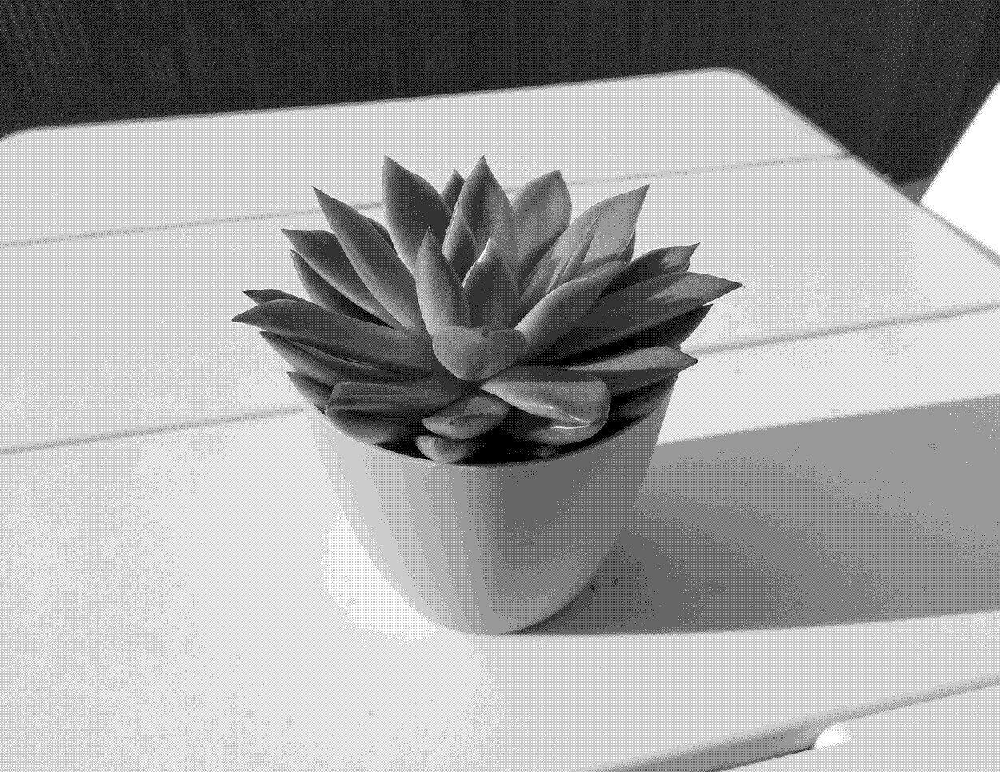

Echeveria Agavoides

Care
A succulent with very few needs during winter, that likes a dry soil and plenty of light during summer.
- Can be harmed by moisture: keep it dry
- Prefers mineral soils
- Grows best with strong exposure, even direct sunshine
- Must ideally be placed outside during summer
- Survives very well on its own during winter